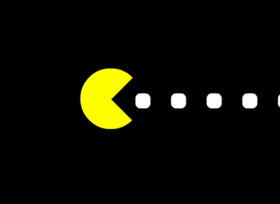

1. Use The Arrow Keys To move Around
2. The Rotation of Pacman Is currently under maintanance..
3. Press the enter key to Pause/Start the Game
4. You are presented With just One Live, For simplicity Reasons
5. To Read more information about the game, Click: More information
Thank You for your support